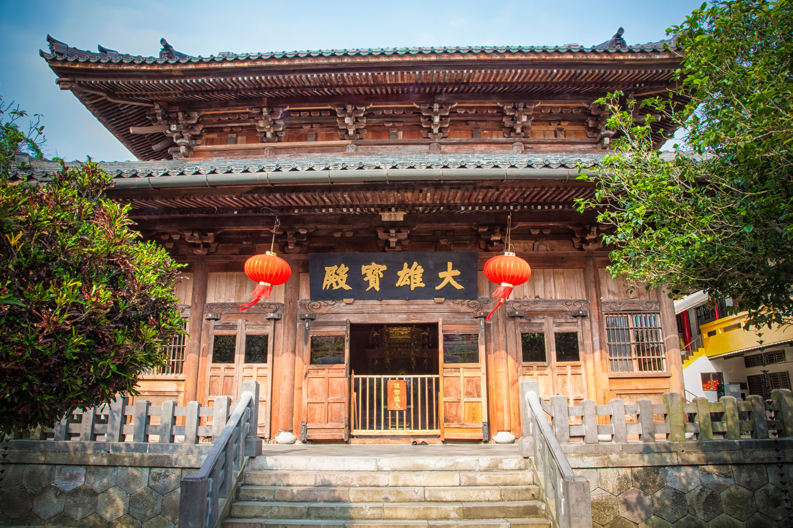
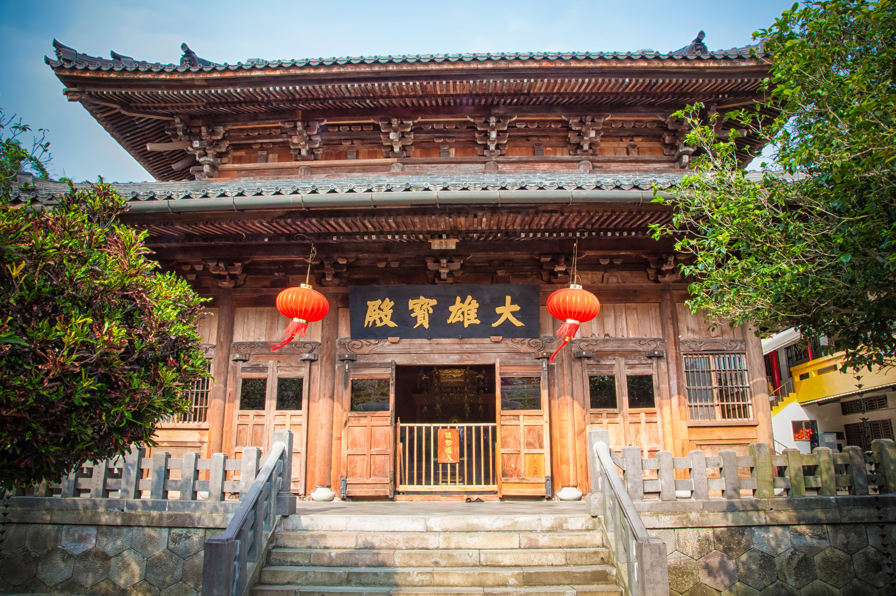

Little bit on Zen History
Zen Buddhism, with its profound impact on Japanese culture and spirituality, traces its roots to ancient India and the teachings of Siddhartha Gautama, the historical Buddha. However, it wasn't until the 12th century that Zen found its way to Japan, marking the beginning of a transformative journey within the country's religious and philosophical landscape. The transmission of Zen to Japan is often attributed to the monk Eisai, who returned from a pilgrimage to China in 1191. Eisai introduced the Rinzai school of Zen, emphasizing the practice of seated meditation (zazen) as a direct means to enlightenment. Not long after, another monk named Dogen brought the Soto school to Japan, which also emphasized zazen but with a distinctive focus on everyday activities as a form of meditation. Throughout the Kamakura period (1185–1333), Zen gained popularity among the samurai class, seeking a path to mental clarity and discipline. The simplicity and directness of Zen teachings resonated with the warrior ethos, influencing the development of the martial arts and the aesthetic principles of Japanese art and culture. The Muromachi period (1336–1573) witnessed the establishment of Zen monasteries as centers of cultural and artistic pursuits. The ink painting technique known as sumi-e and the Japanese tea ceremony (chanoyu) both have roots in Zen philosophy, emphasizing mindfulness, simplicity, and the appreciation of the present moment. Zen Buddhism reached its zenith during the Edo period (1603–1868), as it became deeply integrated into Japanese society. The renowned tea master Sen no Rikyu exemplified the Zen principles of harmony, respect, purity, and tranquility in the art of tea. Furthermore, influential Zen masters like Hakuin Ekaku revitalized the practice of koans, enigmatic statements or questions used to provoke deep contemplation and break through conceptual thinking. Today, Zen continues to be a significant force in Japanese culture, attracting practitioners from various walks of life. Its influence extends beyond religious boundaries, shaping the mindset of individuals seeking a direct and experiential approach to understanding the nature of existence. The history of Zen in Japan is a testament to its enduring impact on the country's spiritual, artistic, and philosophical traditions.
 
